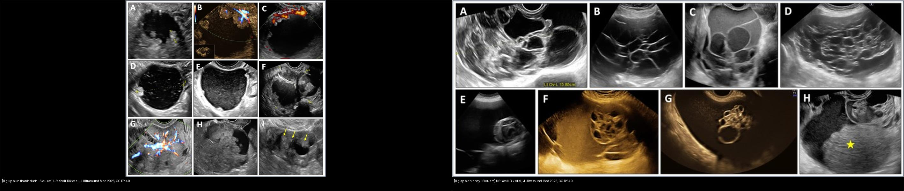
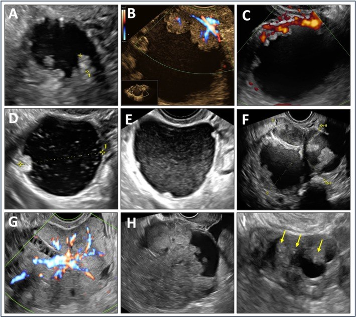
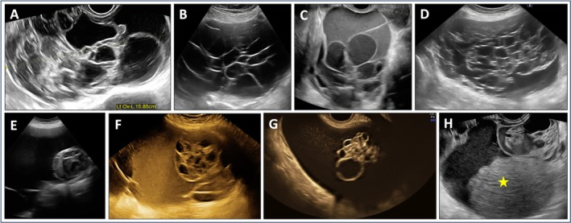
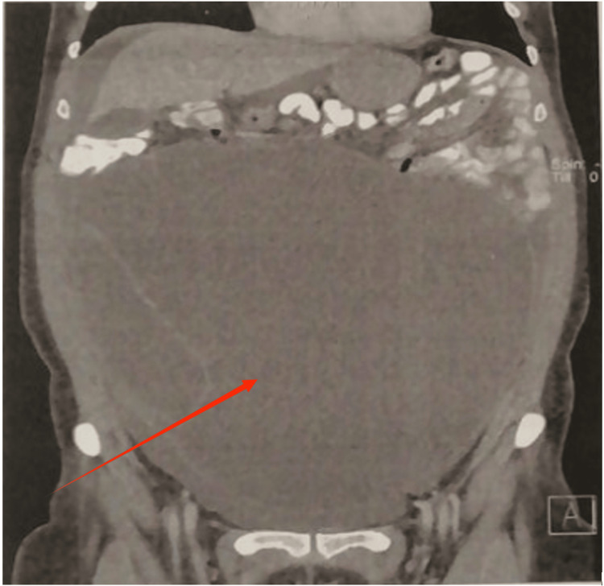
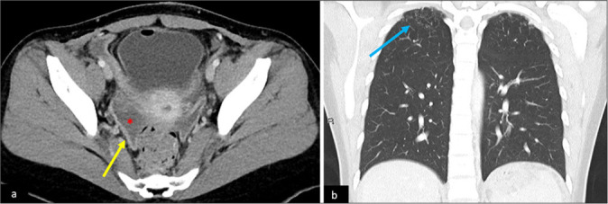
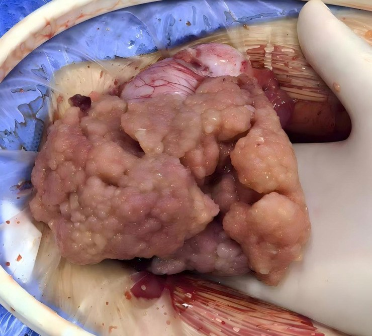

537 — U buồng trứng giáp biên (borderline): nhú trong nang, không xâm lấn / Borderline ovarian tumours
Tags: pattern:u-buong-trung pattern:u-giap-bien vung:buong-trung score:O-RADS protocol:MRI-chau protocol:sieu-am-tu-cung-phan-phu
Mức chắc chắn (certainty): tổng hợp y văn (literature synthesis) — nhóm tự biên từ y văn mở (Europe PMC/PMC: J Ultrasound Med, J Clin Imaging Sci, Front Oncol, Cancers, Cureus) + các ca minh họa có giấy phép; không phải ca nguyên văn đơn lẻ.
1. Tổng quan — "nửa lành nửa ác": có tăng sinh nhưng KHÔNG xâm lấn mô đệm + cơ chế hình ảnh
- Định nghĩa mấu chốt (điều quyết định tên gọi): u giáp biên (borderline ovarian tumour — BOT) là u biểu mô buồng trứng có tăng sinh tế bào + dị dạng nhân rõ (nhiều hơn u lành) nhưng KHÔNG có xâm lấn mô đệm phá hủy (destructive stromal invasion) — đúng tiêu chuẩn của ung thư xâm lấn. Chính chữ "không xâm lấn" này đổi tiên lượng và phẫu thuật: không cần nạo hạch hệ thống, có thể bảo tồn sinh sản.
- Dịch tễ (định lượng): BOT chiếm ~10–15% u biểu mô buồng trứng, gặp ở tuổi trung bình ~40 (sớm hơn ung thư xâm lấn
60), **1/3 ca < 40 tuổi** → nằm đúng nhóm tuổi sinh sản (so sánh536). Thể hay gặp: thanh dịch (serous — ~50–55%), nhầy (mucinous — ~15–20%), seromucinous, endometrioid, tế bào sáng (clear cell), Brenner. - Sinh học — vì sao "giáp biên" không phải "lành": nhóm thanh dịch mang đột biến BRAF/KRAS và là tổ tiên của ung thư thanh dịch độ thấp (low-grade serous carcinoma — LGSC); nhóm nhầy gắn với u nhầy ruột thừa/buồng trứng (liên quan
539). Có mảng cấy (implants) ở phúc mạc: không xâm lấn (non-invasive) — tiên lượng tốt; xâm lấn (invasive implant) = thực chất là LGSC ngoài buồng trứng, tiên lượng xấu hơn. - TẠI SAO hình ảnh là "nang + nhú" (giải thích vật lý/mô học):
- Nhú (papillary projection): chồi biểu mô ác–giáp biên có lõi xơ–mạch (fibrovascular core) → trên siêu âm Doppler/MVI là cấu trúc đặc có TƯỚI MÁU (khác cục máu đông/cặn không mạch); trên MRI T2 trung gian, ngấm mạnh sau tiêm. Vì sao "nhú mạch hóa" là dấu hiệu quan trọng: nó phân biệt chồi u thật với nhú xơ lành (không mạch).
- Nội dung nang: nhầy (mucin) là glycoprotein giàu nước → T2 rất sáng, T1 tối, KHÔNG mất tín hiệu khi fat-sat; đặc hơn nước nên trên CT có thể ~10–20 HU (nhỉnh hơn dịch đơn thuần 0–10 HU).
- Mô học quyết định "đồng nhất": dysgerminoma/
536đồng nhất; còn BOT không đồng nhất vì vừa nang vừa nhú + vách; u xơ tuyến nang (cystadenofibroma) lành lại T2 TỐI do mô xơ đặc nghèo nước.
- Ngưỡng định lượng về theo dõi/tái phát (Barts 2026): tái phát chung 3–10%; cắt nang (cystectomy) ~31% so với cắt phần phụ/buồng trứng (BSO) ~5%; phẫu thuật bảo tồn 10–20% vs triệt căn ~5%; bệnh ngoài buồng trứng (extra-ovarian) tái phát tới 25%. Về thời điểm: 37% tái phát < 2 năm, 31% từ 2–5 năm, 32% > 5 năm, ~10% sau 10 năm → phải theo dõi rất dài. Yếu tố tăng tái phát: u > 10 cm, tuổi ≥ 40, hai buồng trứng, kiến trúc micropapillary/cribriform. Vi xâm lấn (microinvasion, ổ < 5 mm) không đổi tiên lượng ở giai đoạn I.
- Vì sao quan trọng: gọi nhầm BOT = "ung thư xâm lấn" → mổ quá rộng (cắt tử cung + nạo hạch + mạc nối) ở người trẻ còn muốn có con, là oan; ngược lại gọi nhầm BOT = "u lành" → bỏ theo dõi, mất ca LGSC tái phát muộn.
2. Mẫu hình + chẩn đoán phân biệt theo khuôn nang & mô đặc (Gamut)
- Khuôn 1 — Nang có NHÚ mạch hóa (nang ± vách + ≥ 1 nhú ngấm/tưới máu): BOT thanh dịch là điển hình nhất (O-RADS 4–5). Nhú càng nhiều, càng lớn → càng nghi BOT/ung thư xâm lấn.
- Khuôn 2 — Nang NHIỀU NGĂN "tổ ong" (multilocular, > 10 ngăn nhỏ, dịch đục lấm tấm): BOT nhầy — đặc trưng một bên, rất lớn (nhiều ca > 20 cm), dịch nhầy có cặn lơ lửng; có thể có hạt tổ ong (honeycomb nodules).
- Khuôn 3 — VI NANG (microcystic pattern): tập hợp dày các vi nang nhỏ tạo "bọt biển" — gặp ở cả BOT thanh dịch/seromucinous/nhầy lẫn u xơ tuyến nang lành (cystadenofibroma) → chồng lấp nặng, đây là cạm bẫy lớn (mục 5).
- Khuôn 4 — Nang + MÔ ĐẶC ƯU THẾ: thể hiếm clear cell/endometrioid BOT — khối đặc chiếm ưu thế, dễ gọi nhầm ung thư xâm lấn.
- Khuôn 5 — Nhú MẶT NGOÀI buồng trứng (serous surface papillary BOT): tổn thương dạng "súp lơ" bám mặt vỏ buồng trứng, buồng trứng có thể gần như bình thường → dễ "trông lành tính", O-RADS có thể chỉ ra 3.
- Gamut theo tuổi (bộ lọc đầu tiên): < 40 tuổi** → BOT/u mầm–mô đệm (
536)/u quái; **> 50 tuổi → nghiêng ung thư biểu mô xâm lấn (535). - Mimic cần loại: u xơ tuyến nang (cystadenofibroma) lành (T2 tối, không nhú mạch); ung thư biểu mô xâm lấn (mô đặc nhiều, báng, hạch, cấy xâm lấn —
535); u quái trưởng thành (mỡ ± vôi —530); nang lạc nội mạc (endometrioma) (T1 sáng, T2 shading); áp-xe vòi–buồng trứng/xoắn (530,540).
3. Bảng so sánh phân biệt (ma trận đối chiếu)
| Thực thể (entity) | Hình ảnh điển hình (US/CT/MRI) | Chốt vào (rule-in) | Chốt loại (rule-out) | Gợi ý xác nhận |
|---|---|---|---|---|
| BOT thanh dịch (serous BOT) | Nang ± vách có NHÚ mạch hóa nhiều; đôi khi nhú mặt ngoài; dịch trong | Nhiều nhú có tưới máu trong nang ở người < 50 tuổi | Khối mỡ ± vôi → không phải BOT (u quái) | MRI T1 sau tiêm (nhú ngấm) + mô học (không xâm lấn mô đệm) |
| BOT nhầy (mucinous BOT) | Nang nhiều ngăn > 10 ngăn ("tổ ong"), lớn > 20 cm, một bên, dịch đục có cặn | Nang vi ngăn lớn một bên + hạt tổ ong + CA19-9 ± | Nang vi ngăn không nhú, T2 tối đều → nghĩ cystadenofibroma | Phẫu thuật + kiểm tra ruột thừa (bỏ sót u nhầy ruột thừa) |
| BOT seromucinous | Nang nhiều nhú + dịch "kính mờ"; gắn lạc nội mạc (endometriosis) | Nhú + dịch kính mờ + bối cảnh lạc nội mạc | Dịch sáng hoàn toàn + không nhú → thể khác | Mô học; liên hệ endometriosis |
| Serous surface papillary BOT | Nhú "súp lơ" mặt ngoài, buồng trứng gần bình thường | Chồi mặt vỏ có tưới máu + CA-125 ± + đôi khi hai bên | Kén/khối nội buồng trứng đơn thuần → BOT nang thông thường | Soi ổ bụng, mô học; cẩn thận "trông lành" |
| U xơ tuyến nang lành (cystadenofibroma) | Nang ± vi nang với thành/mô xơ T2 TỐI, rất ít ngấm, không nhú mạch | T2 tối đều + không DWI sáng + không nhú mạch (nút lành) | Nhú mạch hóa/ngấm mạnh → nghĩ BOT | Theo dõi; tránh sinh thiết oan |
Ung thư xâm lấn (535) |
Mô đặc chiếm ưu thế + vách dày bất quy tắc + báng + cấy xâm lấn + hạch | Mô đặc lớn + báng + cấy/hạch xâm lấn | Khối nang trội, không báng/cấy → nghĩ BOT | FIGO phẫu thuật; CA-125 |
| Nang lạc nội mạc (endometrioma) | T1 sáng + T2 shading (tối dần), nhiều ổ | T1 sáng không đổi khi fat-sat (máu cũ) | T1 tối + dịch sáng T2 → không phải endometrioma | MRI T1 fat-sat; bối cảnh đau/khó có con |

Trái: u giáp biên thanh dịch — nang có nhiều NHÚ mạch hóa (Doppler), ổ nhú/đặc trong nang. Phải: u giáp biên nhầy — nang NHIỀU NGĂN kiểu "tổ ong", dịch đục lấm tấm. Nguồn: Yoeli-Bik R et al., J Ultrasound Med 2025, Fig. 1 & 2, CC BY 4.0 (ảnh ghép letterbox).4. Protocol chụp + O-RADS + phân giai đoạn FIGO + bảo tồn sinh sản
- Siêu âm đầu tay (transvaginal + transabdominal, bắt buộc Doppler/vi mạch MVI): mô tả theo từ vựng O-RADS — vách, nhú (đếm + đo mm, dấu hiệu tưới máu), mô đặc, dịch đục/cặn. MVI thấy được mạch nhỏ cỡ tiểu động mạch trong nhú mà Doppler thường bỏ sót.
- MRI chậu (đọc khối không kết luận được / nghi lan rộng): T2W 3 mặt phẳng + T1W + T1W fat-sat + DWI/ADC + DCE; đối chiếu O-RADS MRI. Chốt định hướng: nhú ngấm mạnh thì động mạch (BOT/ác) vs mô xơ T2 tối ít ngấm (cystadenofibroma).
- CT ngực–bụng–chậu có cản quang: phân giai đoạn, tìm cấy phúc mạc/mạc nối to, báng, hạch, tổn thương phổi; cũng để thấy ruột thừa bất thường (nhầy ruột thừa → nghĩ
539). - Dấu ấn: CA-125 (thanh dịch/ngoài buồng trứng) ± CA19-9 (nhầy); dùng theo dõi, không dùng một mình để chốt lành/ác.
- O-RADS (US v2022/MRI): nhú ≥ 1 + tưới máu thường đẩy lên O-RADS 4 (nguy cơ trung bình ~10–50%); đặc điểm nguy cơ cao → O-RADS 5 (≥ 50%). BOT là "vùng xám": nằm rải rác O-RADS 3→5, không có dấu hiệu nào một mình chốt BOT.
- Phân giai đoạn & điều trị: dùng FIGO chung u biểu mô (
535). Phẫu thuật bảo tồn sinh sản (cắt nang/cắt một phần phụ một bên + phần giai đoạn) là lựa chọn ở người trẻ; không nạo hạch hệ thống thường quy; thể micropapillary + cấy xâm lấn cần xử trí như LGSC. - Frozen section: độ chính xác phân biệt giáp biên với lành/ác thấp hơn u thường → kết quả mô bệnh sau cùng mới chốt phạm vi mổ.
flowchart TD
A[Khối phần phụ: nang ± nhú] --> B{Siêu âm O-RADS: có NHÚ tưới máu / vách dày / mô đặc?}
B -->|Không: nang đơn thuần| Z[O-RADS 1-2: theo dõi]
B -->|Có| C{T1/T2: MỠ hay VÔI HÓA?}
C -->|Có mỡ ± vôi| D[U quái - xem 530]
C -->|T1 sáng, T2 shading| E[Nang lạc nội mạc - 530]
C -->|Không| F{Mô xơ T2 TỐI + không ngấm?}
F -->|Có| G[Cystadenofibroma lành: theo dõi]
F -->|Không| H{Mô đặc ưu thế + báng + cấy/hạch?}
H -->|Có| I[Nghi ung thư xâm lấn - 535: FIGO]
H -->|Không, nang+nhú| J[Nghi BOT: O-RADS 4-5]
J --> K{Người trẻ còn muốn có con?}
K -->|Có| L[Phẫu thuật BẢO TỒN: cắt nang/một phần phụ + kiểm tra ruột thừa]
K -->|Không| M[Cắt phần phụ hai bên ± tử cung; không nạo hạch thường quy]
L --> N[Cấy XÂM LẤN hoặc micropapillary?]
M --> N
N -->|Có| O[Xử trí như LGSC]
N -->|Không| P[Theo dõi DÀI: tái phát 32% sau 5 năm, ~10% sau 10 năm]
5. Biến thể bình thường và cạm bẫy
- Cạm bẫy "buồng trứng sau cắt nang" (post-cystectomy) — điểm chính của Kuo et al. 2026: sau cắt nang, buồng trứng có thể có cấu trúc xoắn cuộn, giả đặc (pseudosolid), dễ đọc nhầm là thành phần đặc của BOT tái phát/tiến triển. Đây là vùng xám đã biết, O-RADS chưa được kiểm định cho buồng trứng hậu phẫu → cần đọc cùng mô bệnh + so phim cũ.
- Cạm bẫy mô phúc mạc sau mổ: dày/ngấm phúc mạc lan tỏa sau cắt nang BOT có thể trông giống lan tràn phúc mạc và làm CA-125 tăng — nhưng mô học có thể là viêm/dính lành, không phải tiến triển xâm lấn (Kuo Fig. 7; ảnh ca 4 dưới). Đừng hóa trị oan vì hình ảnh.
- Cạm bẫy "vi nang" (microcystic): u xơ tuyến nang lành cũng tạo hình vi nang/bọt biển như BOT (JUM Fig. 7) → đừng chỉ vì "vi nang" mà chốt BOT; tìm nhú mạch hóa và độ ngấm/T2.
- Nhú lành vs nhú u: mọi "nhú" phải xem tưới máu/ngấm; nhú xơ lành không mạch. Đừng đếm nhú mà bỏ Doppler/MVI.
- Serous surface papillary BOT "trông lành": tổn thương ở mặt ngoài nên có thể O-RADS 3; nếu bệnh cảnh gợi ý (bụng to, CA-125) thì đánh giá kỹ vỏ buồng trứng hai bên.
- Frozen section: đừng chốt phạm vi mổ triệt căn chỉ dựa frozen; BOT nhầy cần soi ruột thừa (nguy cơ u nhầy ruột thừa —
539). - Ngộ nhận "BOT = lành": tái phát muộn nhiều năm → theo dõi dài hạn, không xuống thang sau 2–3 năm.
6. Tự lượng giá — Blind Quiz
Ca 1 — Nữ ~20–40 tuổi, nang buồng trứng có nhú. Đọc siêu âm + Doppler.

- Gợi ý: nang ± vách, có thành phần nhú trong nang.
- Hỏi: dấu hiệu nào phân biệt "nhú u" với "cục cặn/cục máu"? Chẩn đoán hàng đầu?
Bấm để hiện đáp án (findings + chẩn đoán)
- Dấu hiệu (findings): nang có nhiều nhú (papillary projections); Doppler/MVI cho thấy mạch máu trong nhú — nhú có lõi xơ–mạch.
- Chẩn đoán (diagnosis): u giáp biên thanh dịch (serous BOT) — nhú mạch hóa là chồi biểu mô có lõi mạch, không phải cặn; cần MRI/định hướng theo O-RADS.
- Nguồn ảnh: Yoeli-Bik R et al., J Ultrasound Med 2025 Fig. 1, CC BY 4.0.
Ca 2 — Nữ lớn tuổi, bụng to, khối nang NHIỀU NGĂN một bên rất lớn. Đọc siêu âm.

- Hỏi: hình "tổ ong" (honeycomb) gợi ý gì? Vì sao phải kiểm tra ruột thừa?
Bấm để hiện đáp án (findings + chẩn đoán)
- Dấu hiệu (findings): nang nhiều ngăn (> 10 ngăn nhỏ) kiểu "tổ ong", dịch đục lấm tấm (cặn nhầy); kích thước rất lớn, một bên.
- Chẩn đoán (diagnosis): u giáp biên nhầy (mucinous BOT) — thể nhầy thường một bên, khổng lồ, vi ngăn; bắt buộc kiểm tra ruột thừa (loại u nhầy ruột thừa, liên quan
539). - Nguồn ảnh: Yoeli-Bik R et al., J Ultrasound Med 2025 Fig. 2, CC BY 4.0.
Ca 3 — Nữ 61 tuổi không triệu chứng, khối nang rất lớn chiếm bụng. Đọc MRI coronal.

- Hỏi: khối "gần bằng nước" với vách dày + vôi hóa thành gợi ý gì? Vì sao khối lớn mà bệnh nhân lại không triệu chứng?
Bấm để hiện đáp án (findings + chẩn đoán)
- Dấu hiệu (findings): MRI cho thấy khối nang tín hiệu gần bằng nước, vách trong dày, có vôi hóa thành (mũi tên đỏ), đường kính tối đa 24 cm từ buồng trứng phải, chiếm trọn ổ bụng.
- Chẩn đoán (diagnosis): u giáp biên nhầy buồng trứng (mucinous BOT) — phát triển âm thầm, thường tình cờ; cần dấu ấn (CA19-9/CA-125) + mô học.
- Nguồn ảnh: Troupi M et al., Cureus 2025 Fig. 1, CC BY 4.0.
Ca 4 — Nữ trẻ sau cắt nang BOT, CA-125 tăng, dày phúc mạc. Đọc CT/MRI chậu.

- Hỏi: dày/ngấm phúc mạc lan tỏa + CA-125 tăng có đồng nghĩa "tiến triển xâm lấn"? Cạm bẫy ở đây là gì?
- Dòng phản biện (Argon): nguồn gốc là case series giáo dục — kết luận dựa trên diễn tiến và mô học, không phải thử nghiệm; đừng khái quát hóa thành quy tắc.
Bấm để hiện đáp án (findings + chẩn đoán)
- Dấu hiệu (findings): (a) CT/MRI chậu: dày và ngấm phúc mạc lan tỏa ở chậu hông (dấu sao/mũi tên vàng); (b) tổn thương màng phổi/phổi kèm theo (mũi tên xanh).
- Chẩn đoán (diagnosis): hình ảnh giống lan tràn phúc mạc sau cắt nang BOT, nhưng đây là cạm bẫy: buồng trứng hậu phẫu và dày phúc mạc lành/viêm có thể trông giống tiến triển và kèm CA-125 tăng → cần tương quan mô bệnh, đừng mặc định là bệnh ác.
- Nguồn ảnh: Kuo BJ et al., J Clin Imaging Sci 2026 Fig. 7, CC BY-NC-SA 4.0 (giữ nguyên bản).
Ca 5 — Ảnh đại thể: khối "súp lơ" bám mặt buồng trứng. Đọc ảnh đại thể.

- Hỏi: khối dạng "súp lơ" ở MẶT NGOÀI buồng trứng gợi ý thể nào của BOT? Vì sao dễ "trông lành" trên siêu âm?
Bấm để hiện đáp án (findings + chẩn đoán)
- Dấu hiệu (findings): khối dạng "súp lơ" (cauliflower-like) gồm nhiều nhú bám mặt ngoài (vỏ) buồng trứng, hai bên.
- Chẩn đoán (diagnosis): BOT thanh dịch nhú mặt ngoài (serous surface papillary BOT) — vì tổn thương ở bề mặt nên phần nang bên trong gần bình thường → trên siêu âm dễ chỉ xếp O-RADS 3 ("trông lành").
- Nguồn ảnh: Wang Z et al., Front Oncol 2026 Fig. 3, CC BY 4.0.
Ca 6 — Ảnh ghép: bên nào giáp biên nhầy, bên nào giáp biên thanh dịch?
- Hỏi: dấu hiệu nào tách hai bên? Thể nào hay gặp hơn và ở tuổi nào?
Bấm để hiện đáp án (findings + chẩn đoán)
- Trái = BOT thanh dịch: nang có NHÚ mạch hóa (Doppler) — chồi u có lõi xơ–mạch.
- Phải = BOT nhầy: nang NHIỀU NGĂN "tổ ong" (> 10 ngăn) dịch đục lấm tấm, kích thước lớn một bên.
- Chốt: nhú tưới máu → thanh dịch; vi ngăn/honeycomb một bên → nhầy. Thanh dịch hay gặp hơn (~50–55%) và BOT nói chung ở tuổi ~40.
- Nguồn: Yoeli-Bik R et al., J Ultrasound Med 2025 Fig. 1 & 2, CC BY 4.0 (ảnh ghép letterbox).
Bài liên quan chéo
- 500 – Tổng quan Vú & Sản phụ khoa
- 530 – Khối phần phụ O-RADS, dermoid & xoắn
- 535 – Ung thư buồng trứng, phúc mạc & u Krukenberg
- 536 – U mầm & u mô đệm–dây sinh dục buồng trứng
- 539 – Pseudomyxoma peritonei & u nhầy ruột thừa
- 540 – Lạc nội mạc tử cung sâu (DIE) & viêm vùng chậu
Ảnh
537_serous-BOT_US_PMC12240477.jpg,537_mucinous-BOT_US_PMC12240477.jpg,537_microcystic-DDx_US_PMC12240477.jpg,537_mucinous-BOT_MRI_PMC12504785.jpg,537_serous-surface-papillary_GROSS_PMC12902836.jpg,537_postop-peritoneal_MRI_PMC13157898.jpg,composite_serous-vs-mucinous-BOT.jpg. Nguồn + giấy phép từng ảnh trongimages/CREDITS.md.
Không dùng để chẩn đoán độc lập khi chưa có người hướng dẫn.